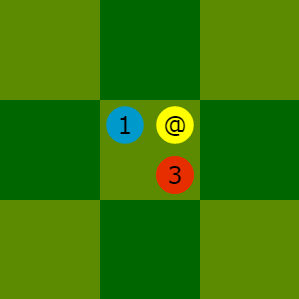
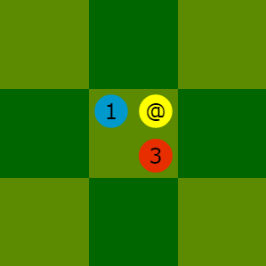
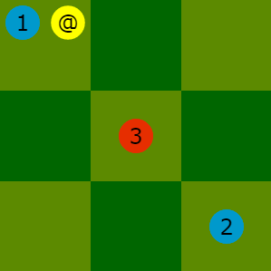
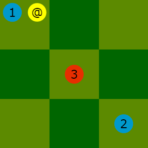

BALTEK (la reguloj) fare de Lucas Borboleta estas disponebla laŭ la permesilo Krea Komunaĵo Atribuite-Samkondiĉe 4.0 Tutmonda.
Reguloj de Baltek ⚽🏃
Enkonduko Kopirajto Revizioj Materialo Celo Preparo Ludvico Notacio de movoj Indeksoj de versioj DankojBALTEK estas tabulludo pri futbalo, alternante ludvicoj. Jen ĝia principoj:
La nomo de la ludo estas konstruita per sonoj de la vortoj ballon(1)
(BAL) kaj tekniko
(TEK).
(1) La franca traduko de pilko estas ballon
.
BALTEK (la reguloj) fare de Lucas Borboleta estas disponebla laŭ la permesilo Krea Komunaĵo Atribuite-Samkondiĉe 4.0 Tutmonda.
Ĉi tiu dokumento estas la versio 1.0 de la esperantaj reguloj de BALTEK.
La tablo sube resumas la motivojn por ĉiu versio.
| Versio | Priskribo |
|---|---|
| 1.0 | Traduko el la versio 1.1 de la francaj reguloj. |

Jen la materialo, ilustrita en la supra bildo:
a3, markita per
#, estas la golejon, kiun defendas la blua teamo.
l3, markita per
#, estas la golejon, kiun defendas la ruĝa teamo.
La koordinatoj kaj la markoj @
kaj #
estas uzitaj por la notacio de movoj.
La jena bildo montras la startajn ĉelojn de la blua teamo.

La jena bildo montras la startajn ĉelojn de la ruĝa teamo.

kuri
kurikostas 1 kredito kaj permesas movi futbaliston distance de 1 ĉelo.
courirnur unufoje dum ĉiu ludvico.
courirne movas la pilkon.
Ekzemplo: la eblaj cellokoj por la blua futbalisto 3
havas flavaj limoj.

sprint
sprintcoûte 1 bonus et étend à 2 cases le déplacement d'un footballeur.
sprintdoit toujours être combinée à l'action
courir.
Ekzemplo : avec des bordures jaunes, les destinations possibles pour le footballeur bleu 3
.

tirer
transmettre la balle à un footballeur,
envoyer la balle sur une case videet
tirer au butobéissent aux mêmes règles.
tirercoûte 1 kredito et permet, si les conditions générales et les conditions de forces sont satisfaites, de déplacer la balle de 1 ou 2 cases en horizontal, vertical ou diagonal, mais sans courber sa trajectoire.
tireurdans la case de départ de la balle.
tireurn'a pas déjà
tiré.
tireurpartage sa case avec un adversaire, alors le
tireurdoit :
dribble.
tireurdéplace la balle par-dessus un adversaire, alors le
tireurdoit :
lob.
Ekzemplo : avec des bordures jaunes, les destinations possibles pour la balle
par le tireur 3
bleu ; aucune n'exige dribble ou lob.
dribble
tirer.
dribblecompense le déficit de force du
tireurvis-à-vis de l’adversaire qui partage sa case.
dribblecoûte 1 kredito par unité de force compensée.
Ekzemploj : pour posséder la balle, le tireur 2
bleu doit effectuer un dribble coûtant 1 kredito ;
et le tireur 1
bleu doit effectuer un dribble coûtant 2 kreditos.
 

lob
tirer.
lobcompense le déficit de force du
tireurvis-à-vis de l’adversaire par-dessus lequel passe la balle.
lobcoûte 1 kredito par unité de force compensée.
Ekzemploj : pour transmettre la balle au footballeur bleu 2
, le tireur 1
bleu
doit effectuer un lob coûtant 1 kredito, dans le contexte de gauche,
et un lob coûtant 2 kreditos dans le contexte de droite.
 

Laŭbezone, la movoj de la ludbatalo estas priskribitaj kiel en la jena ekzemplo.
@d3 f3g3 d1e1 / h3g3 g5f5 i3h3 e1e2 d5e4 f5g4 / f5e4 g1f1 i1h2 @e4 @g4+ / g3g4 i5i4 @i4 ... @# /
Laŭvole, komentarioj estas aldonitaj kiel en la jena ekzemplo.
#! BALTEK 1.1 #@ bernard@bois.fr robert@riviere.fr #: 2014-12-24 11:09:30 @d3 f3g3 d1e1 / h3g3 g5f5 i3h3 e1e2 d5e4 f5g4 / f5e4 g1f1 i1h2 @e4 @g4+ / g3g4 i5i4 @i4 ... @# / #: 2014-12-24 11:30:00 # La bonuson bone ludis la ruĝaj.
La notacio estas strukturita laŭ linioj. Jen ĝiaj konvencioj:
, laŭvole ripetita, disigas la vortojn.
#estas komento aŭ pseŭda komento, kaj ĉiam estas nedeviga.
# #! BALTEK i.ji.jde la formato de notacio de BALTEK; uzebla nur unufoje, kiel unua lineo.
#@bluankaj
ruĝan; uzebla nur unufoje.
#:ISOformato, la daton, kaj laŭvole la tempon; uzebla plurfoje.
bluanludvicon, kaj sekve, la
ruĝanludvicon.
/bluanludvicon. La fino de la linio finas la
ruĝanludvicon.
kuriestas notita per vorto komencante de la startinta ĉelo kaj finante de la alveninta ĉelo. Ekzemplo:
g3f3sprinto,
*plilongigas la vorton. Ekzemplo:
g3e2*ŝotiestas priskribita per vorto komencante de la signo
@kaj finante de la alveninta ĉelo. Ekzemplo:
@c3ŝoti al golejoestas mallongigita per la jena vorto:
@#
driblo, kostanta 1 krediton,
+plilongigas la vorton. Ekzemplo:
@c3+driblo, kostanta 2 kreditojn,
++plilongigas la vorton. Ekzemplo:
@c3++pilkarko, kostanta 1 krediton,
!plilongigas la vorton. Ekzemplo:
@c3!pilkarko, kostanta 2 kreditojn,
!!plilongigas la vorton. Ekzemplo:
@c3!!driblokaj
pilkarko, kostantaj po 1 krediton,
+!plilongigas la vorton. Ekzemplo:
@c3+!i.j.
1.0.
iestas pliigita de 1, kaj la dua indekso
jestas rekomencita de 0.
jestas pliigita de 1 kiam la tekstoj aŭ la ilustraĵoj aŭ la notacio de movoj aŭ la strukturo de la dokumento evoluas, sed sen ŝanĝi la logikon de la reguloj.
jekde 0.
Mi dankas miajn filojn A
kaj C
pro ilia pacienco kaj komentoj dum la testoj de BALTEK.
Mia edzino P
, kiu ĉiam pensas longatempe dum ludbataloj de ŝako,
inspiris la kreon de la sprinto-bonuso
, kiu vigligis la ludon de BALTEK;
mi dankas ŝin.